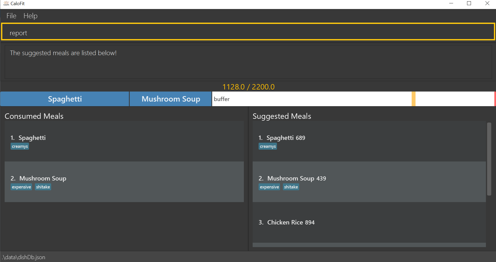

Overview
My team of 4 software engineering students and I were tasked with enhancing a basic desktop addressbook application(AddressBook - Level 3) for our Software Engineering project. We chose to morph it into a calorie tracker cum food database system called CaloFit. This enhanced application allows health-conscious people or those who are aiming for a diet to set their calorie budget for the day; manage the meals that they take; find dishes based on keywords or their remaining calorie budget; and get data about their calorie intake progress through a report.
CaloFit is a desktop application for tracking the calories that the user has taken from his or her meals over the course of using the application.
The user interacts with CaloFit using a Command Line Interface(CLI) that is represented by a box near the top of the application screen. This is where the user can type in their commands and press "Enter" on their keyboards to execute them.
It has a Graphical User Interface(GUI) created with JavaFX. The GUI is the main display that the user sees upon starting up CaloFit.
This is what our project looks like as shown in Figure 1 below:
My role was to design and write the codes for the report feature. The following sections
illustrate these enhancements in more detail, as well as the relevant documentation I have added to
the user and developer guides in relation to these enhancements.
Note the following symbols and formatting used in this document:
| This symbol indicates important information. |
report A grey highlight(called a monospace) indicates that this is a command that can be inputted into the command line and executed by the application.
ReportCommand A yellow highlight indicates that the text is a Class or Object.
Logic#getStatistics() A yellow italicised highlight indicates a method call of an Object(method name is indicated after the # symbol).
Summary of contributions
This section shows a summary of my coding, documentation, and other helpful contributions to the team project.
-
Major enhancement: added the ability to generate a Report.
-
What it does: creates a Report that displays the statistics calculated from the user’s meal history for that particualar month.
-
Justification: This feature gives purpose to the application as the user should be someone who wants to keep track of their calorie intake. By implementing this feature, the user is able to know their calorie intake for the month, as well as other statistics generated from it, whenever they want.
-
Highlights: As virtually any form of statistical data can be generated from a user’s meal history, the scope of the data calculated and shown to the user is not exhaustive. The statistics chosen to be calculated are decided based on the user stories and use cases that our team has considered and is linked here.
-
-
Minor enhancement: added automatic saving of the meal history of the user as a JavaScript Objection Notation(JSON) file.
-
What it does: The user’s meal entries into CaloFit will be saved into a JSON file, allowing the user’s meal history to be loaded upon starting up CaloFit.
-
Justification: This small feature is crucial as we need to ensure that the user’s meal log is saved in order to track his or her progress since he or she started using CaloFit.
-
Credits: The methods and structure of converting a Class into a JSON file was taken from the original AddressBook-Level 3 and refactored for the purpose mentioned above.
-
-
Code contributed: [Functional code]
-
Other contributions:
-
Project management:
-
Managed releases v1.2.1 and v1.3 (2 releases) on GitHub.
-
Overall project leader, scheduled meeting timings and summarised each meeting afterwards for dissemination to group members.
-
-
Community:
-
Reported bugs and suggestions for other teams in the class (List of bugs reported)
-
-
Tools:
-
Set up Travis Continuous Integration for my Individual project and helped the team integrate it into the Team project.
-
-
Contributions to the User Guide
Given below are sections I contributed to the User Guide as we had to update the original AddressBook-Level3 User Guide with instructions for the enhancements that we had added. The following is an excerpt from our CaloFit User Guide, showing additions that I have made for the |
Generating a Report: report
Want to have your very own report that summarises your calorie intake progress over this month? Here are the steps to create one now!:
-
Type the word "report" in the command box. A picture is shown below highlighting the command box.
 -
Press "Enter" and a separate window which is the report will appear in the center of your screen as highlighted in the picture below.
If an error message pops up like the one in the picture below, do not panic! This simply means that you have not entered a meal into CaloFit for this month. To fix this, go ahead and add a meal, and you should now be able to generate your report!
|

Your report will display the following statistical data for you to monitor your own progress!:
-
Your Maximum, Minimum and Average calorie intake per day of the current month.
Average value is rounded.
Average value is calculated by totalling your calorie intake in that month so far and dividing it by the total number of days in that month, NOT the number of days that have passed in that month so far. -
The number of days where calorie intake exceeded calorie budget of the month.
-
Your list of most consumed dishes of the month.
-
Your calorie intake per day over the entire month.
-
The quantity of each type of dish consumed in that month.
Below is a picture of the report showing where each type of information mentioned above can be found, corresponding to their number.
|
Changing your system time at any point while CaloFit is running may affect the report shown! To ensure correct data is displayed to you, allow 2 minutes for CaloFit to update itself before creating your report. |
Format: report
Contributions to the Developer Guide
Given below are sections I contributed to the Developer Guide for the |
Report feature
Implementation
The Report feature is implemented through a ReportCommand that extends from the abstract Command class.
It returns a CommandResult object that has the boolean "isReport" set to True when ReportCommand#execute(Model) is called.
The MainWindow Ui component will check the CommandResult for the "isReport" boolean and create a new ReportWindow through the MainWindow#handleReport() method.
The ReportWindow object takes in a Statistics object that is created by calling Logic#getStatistics() which subsequently calls Model#getStatistics(). The Model then returns the Statistics object that is created based on the CalorieBudget and MealLog in the Model.
Additionally, the following operations are implemented in Statistics:
-
Statistics#generateStatistics(ObservableList<Meal>, CalorieBudget) — gets the statistics of the current object. Maximum, Minimum and Average calorie intake per day of the current month are calculated internally in this method.
|
While the above method takes in an ObservableList<Meal> instead of a MealLog, the list is generated from the MealLog and passed as the argument to avoid unnecessary interaction between the MealLog and Statistics classes. Therefore, even though MealLog is not taken in as a parameter, Statistics still depeneds on MealLog to get the data for generating the report. |
-
Statistics#getCalorieExceedCount(CalorieBudget, ObservableList<Meal>) — gets the number of days where calorie intake exceeded the calorie budget for that day.
-
Statistics#getMostConsumedDishes(ObservableList<Meal>) — gets the list of dishes which are consumed the most in the current month.
-
Statistics#getFoodChartSeries(ObservableList<Meal>) — gets the series containing the dishes eaten this month and their respective quantities.
-
Statistics#getCalorieChartSeries(ObservableList<Meal) — gets the series that represents the amount of calories taken by the user over the past month.
Given below is Figure 3.5.1.1 which is a Class Diagram that shows how the ReportCommand interacts with other components of CaloFit.

Given below is an example usage scenario and how the Report feature behaves at each step.
Step 1. The user starts up CaloFit for the first time. The ModelManager will contain a MealLog that has an empty list.
| If the user enters "report" in the Command Line Input with a MealLog that has no Meal entered this month, a CommandException will be thrown since there are no Meal to gather statistics pertaining to this month. |
Step 2. The user has added a Meal into the MealLog through the add feature.
Step 3. The user enters "report" in the Command Line Input to generate the report of CaloFit. The ReportCommand created will return a CommandResult object with "isReport" set to True. When the MainWindow checks this boolean, it calls MainWindow#handleReport() that creates the ReportWindow.
The following activity diagram in Figure 3.5.1.2 summarises the above usage scenario.

The following sequence diagram in Figure 3.5.1.3 shows how the "report" command works.
|
The parameters of the constructor of CommandResult in the above diagram are as follows, from left to right: String message — the message to be displayed to the user in the GUI. boolean showHelp: indicates if the HelpWindow should be generated. boolean showReport: indicates if the ReportWindow should be generated. boolean isExit: indicates if the application should exit along with any other windows that are being shown. Hence, only showReport is set to true to indicate that a ReportWindow should be created, while the rest of the booleans are set to false. |
The following sequence diagram in Figure 3.5.1.4 shows how the ReportWindow is generated.
Design Considerations
Aspect: When the Statistics object is created.
-
Alternative 1 (current choice): Only when a "report" command is entered.
-
Pros: Less processes carried out for each type of command.
-
Cons: At any point in using CaloFit, the statistics are not updated since the object is only created when the "report" command is entered.
-
-
Alternative 2: Every command creates a new updated Statistics object.
-
Pros: Logging of statistics can be accurate, and statistics are always updated.
-
Cons: Unnecessary as user does not need to see the statistics other than through a "report" command and results in every command having to do more work and interact with the Model more, possibly creating more bugs.
-
-
Explanation of Choice: Since the user only needs to see the updated statistics when a "report" command is executed, we only need to generate a new Statistics object with the updated values for that command, hence Alternative 1 is chosen to avoid adding unnecessary complexity to each command.
Aspect: Data structure to store the statistics in CaloFit.
-
Alternative 1 (current choice): Wrap the values in a Statistics object.
-
Pros: Neater code and easier to understand, since all statistic-related values are stored in the Statistics object and are not implemented in the Model.
-
Cons: Additional class to maintain and test for dependencies.
-
-
Alternative 2: Store the values as a List in the Model.
-
Pros: The statistics can be updated easily through the
Modelitself by updating the elements in the List. Accessing the statistics to display is easier as well. -
Cons: Burdens the Model with a responsibility that is largely irrelevant to its current ones, which is to keep track of the Objects that make up the CaloFit model.
-
-
Explanation of Choice: To try and enforce Single Responsibility Principle as much as possible and avoid adding irrelavant functionality to Model.
Testing the generation of the report
| All test cases assume an empty meal log prior to the inputs. To ensure this, you can go to the directory where you installed CaloFit, click on the "data" directory, and delete the mealLog.json file before restarting the application. |
-
Generation of Report.
-
Test case: No meals in input for current month, followed by
report.
Expected: Report is NOT generated. An error message will be shown in the result display box of CaloFit. -
Test case: Any number of meals has been entered for current month, followed by
report.
Expected: Report is generated normally. -
Test case: Any number of meals has been entered for current month and system time is changed to a different month or year, followed by
report
Expected: Report may initially be wrong as stated in the [Report Feature of our User Guide]. The data in CaloFit will be updated in 2 minutes to fit this change in system time, after which the scenario will be similiar to the previous test case.
-
-
Testing validity of number of days where Calorie of the month
-
Test case:
add n/carbonara c/689,set 500, followed byreport.
Expected: Number of days calorie intake exceeded budget will be 1. -
Test case:
add n/carbonara c/689,set 1000, followed byreport.
Expected: Number of days calorie intake exceeded budget will be 0.
-
-
Testing validity of list of most consumed dishes.
-
Test case:
add n/carbonara c/689,add n/beef stew c/200, followed byreport.
Expected: Carbonara and Beef Stew will be in list. -
Test case: same as previous, with additional
add n/carbonara c/689beforereport.
Expected: Only Carbonara will be in the list.
-
-
Testing validity of Calorie Over Time graph.
-
Test case:
add n/carbonara c/689,add n/beef stew c/200, followed byreport.
Expected: Calorie intake for today’s date will be 889. -
Test case: same as previous, with additional
add n/beef stew c/200beforereport.
Expected: Calorie intake for today’s date will be 1089.
-
-
Testing validity of Quantity of Food Consumed graph.
-
Test case:
add n/carbonara c/689, followed byreport
Expected: Quantity of carbonara consumed will be 1. -
Test case:
add n/carbonara c/689,add n/beef stew c/200, followed byreport.
Expected: Quantity of carbonara consumed will be 1. Quantity of beef stew consumed will be 1.
-
-
Testing validity of Maximum, Minimum, and Average calorie intake of the month.
-
Test Case:
add n/carbonara c/689, followed byreport.
Expected: Maximum will be 689, Minimum will be 0, and Average will be 22. -
Test case:
add n/carbonara c/689,add n/beef stew c/200, followed byreport.
Expected: Maximum will be 889, Minimum will be 0, and Average will be 29(for 30 day months) or 28(for 31 day months). -
Test case: same as previous, with additional
add n/beef stew c/200beforereporton a different day in the same month.
Expected: Maximum will be 889, Minimum will be 0, and Average will be 36(for 30 day months) or 35(for 31 day months).As the above test case requires a change in system time, do allow 2 minutes for CaloFit to be updated, as stated in Point 1(Generation of Report).
-